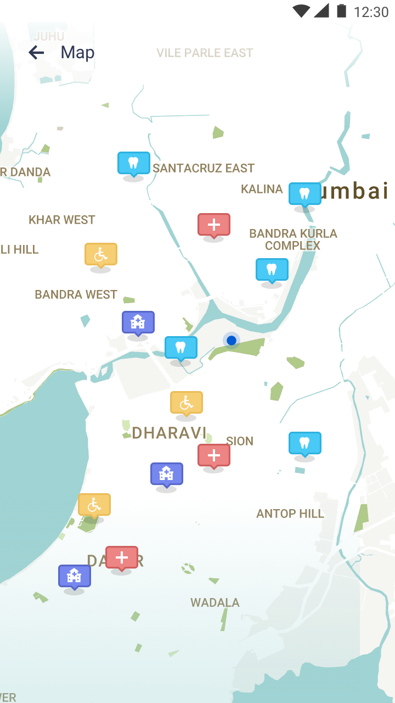
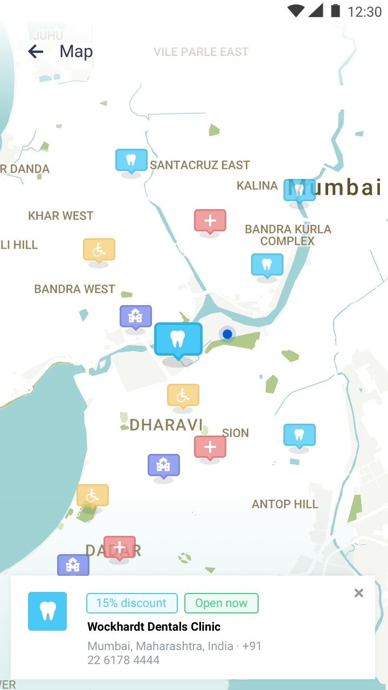
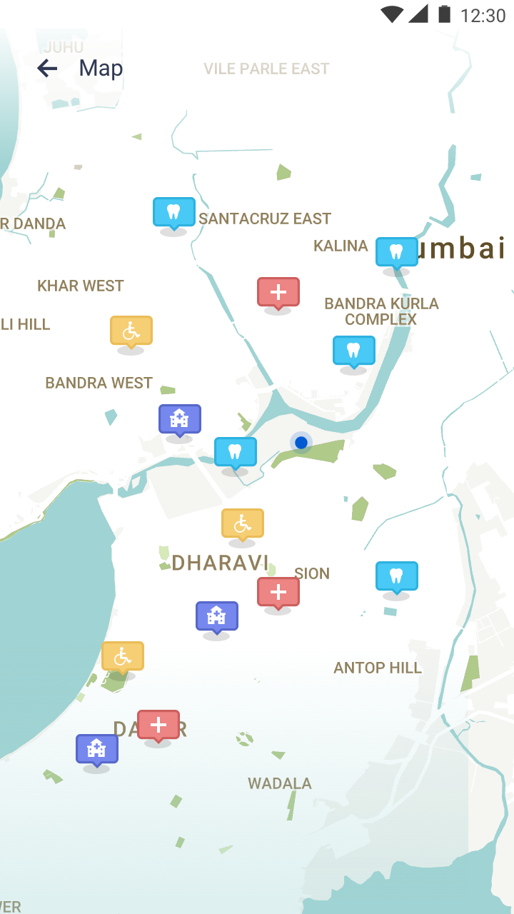
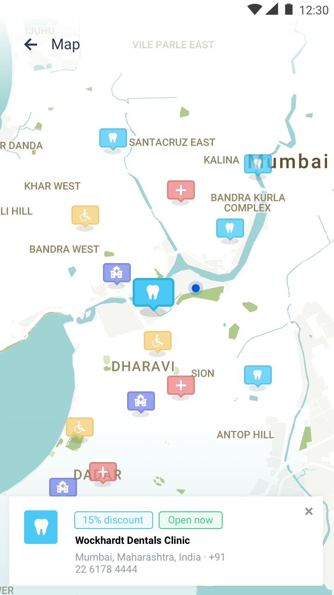

Medicount
Medicount is a digital platform that supports people of low-income background to better manage their health expenditures.
The brief was to create an app that's targeted at people in India and Pakistan, Friendly, implementing material design concepts, there is still no final branding so it has to be defined on the go.
I chose to use default system fonts as that's easiest to maintain and also free. As for colors, I chose to use a wide variety of tones, to help differntiate between the different categories, with Cyan as a leading color.

 


